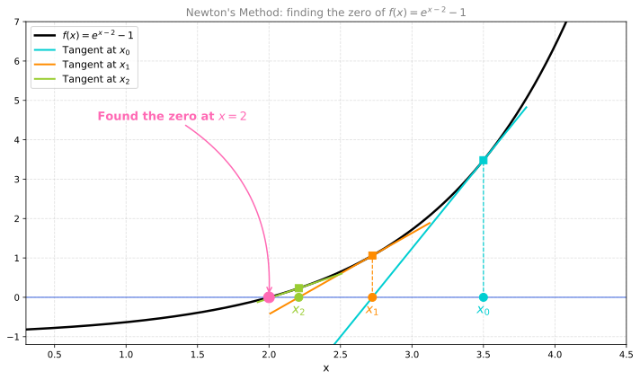
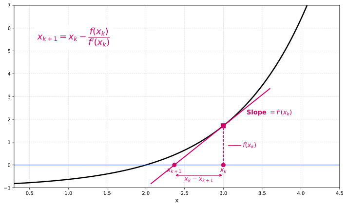
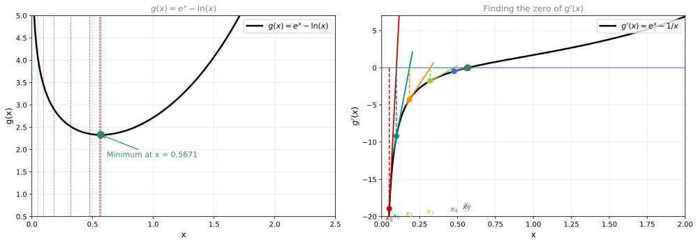

Newton’s Method
calculus
So far we have used gradient descent to find the minimum of a function. It works, but it can be slow — you take many small steps, and the learning rate…
So far we have used gradient descent to find the minimum of a function. It works, but it can be slow — you take many small steps, and the learning rate needs careful tuning. Newton’s method is an alternative that often converges much faster. It uses the second derivative to take smarter steps.
The idea behind Newton’s method is simple: it was originally designed to find the zeros (roots) of a function. But since finding the minimum of a function is equivalent to finding the zeros of its derivative, we can repurpose it for optimization.
Finding Zero of a Function
Suppose we have a function \(f(x)\) and we want to find the point where \(f(x) = 0\).
Geometric Idea
- Start at some initial guess \(x_0\).
- Draw the tangent line to \(f\) at the point \((x_0, f(x_0))\).
- Find where that tangent line crosses the \(x\)-axis. Call that point \(x_1\).
- Repeat: draw the tangent at \(x_1\), find where it crosses the axis to get \(x_2\), and so on.
Each new point is typically much closer to the true zero than the previous one. The method converges very quickly, often in just a few iterations.
Example
Let us use \(f(x) = e^{x-2} - 1\). This function has its zero at \(x = 2\) (since \(e^0 - 1 = 0\)). We start at the initial guess \(x_0 = 3.5\) and watch how Newton’s method converges.
Starting at \(x_0 = 3.5\), the tangent line crosses the \(x\)-axis at \(x_1\), already much closer to the true zero. One more iteration gives \(x_2\), nearly on top of \(x = 2\). Two steps and we have essentially found the root.
Deriving the Update Rule
The tangent line at the current point \(x_k\) has slope \(f'(x_k)\). The geometry gives us rise over run:

\[f'(x_0) = \frac{f(x_0)}{x_0 - x_1}\]
The “rise” is the height \(f(x_0)\) (how far we are from zero vertically), and the “run” is the horizontal distance \(x_0 - x_1\) (how far we step). Solving for \(x_1\):
\[x_1 = x_0 - \frac{f(x_0)}{f'(x_0)}\]
This is the Newton’s method update. In general, at iteration \(k\):
\[\boxed{x_{k+1} = x_k - \frac{f(x_k)}{f'(x_k)}}\]
At each step, we evaluate the function and its derivative at the current point, then jump to where the tangent line hits zero.
From Root-Finding to Optimization
Newton’s method finds the zeros of a function. But we want to find the minimum of a function. How do we connect the two?
Recall from the Optimization page: the minimum of a function \(g(x)\) occurs where its derivative equals zero:
\[g'(x) = 0\]
So if we apply Newton’s method to find the zeros of \(g'(x)\) (instead of \(f(x)\)), we are finding the critical points of \(g\) — the candidates for its minimum.
Substitution
Let \(f(x) = g'(x)\). Then:
- \(f(x) = g'(x)\) — the function whose zero we seek
- \(f'(x) = g''(x)\) — the second derivative of \(g\)
Substituting into the Newton’s method formula:
\[x_{k+1} = x_k - \frac{g'(x_k)}{g''(x_k)}\]
This is Newton’s method for optimization. Instead of dividing by the first derivative (as in root-finding), we divide the first derivative by the second derivative.
Side by Side: Root-Finding vs Optimization
| Newton’s Method (Root-Finding) | Newton’s Method (Optimization) | |
|---|---|---|
| Goal | Find a zero of \(f(x)\) | Minimize \(g(x)\) \(\Rightarrow\) find zeros of \(g'(x)\) \(f(x) \mapsto g'(x)\), \(f'(x) \mapsto g''(x)\) |
| Step 1 | Start with some \(x_0\) | Start with some \(x_0\) |
| Step 2 (Update) | \(x_{k+1} = x_k - \frac{f(x_k)}{f'(x_k)}\) | \(x_{k+1} = x_k - \frac{g'(x_k)}{g''(x_k)}\) |
| Step 3 | Repeat until you find the root | Repeat until you find the candidate for minimum |
The right column is simply the left column with \(f\) replaced by \(g'\) and \(f'\) replaced by \(g''\). That is the entire idea.
Worked Example: Minimizing \(e^x - \ln(x)\)
Recall the function from the Gradient Descent page:
\[g(x) = e^x - \ln(x)\]
Its minimum occurs at the omega constant \(x \approx 0.5671\). Let us find this minimum using Newton’s method for optimization.
We need:
- \(g'(x) = e^x - \frac{1}{x}\) (set this to zero to find the minimum)
- \(g''(x) = e^x + \frac{1}{x^2}\) (the second derivative)
The update rule is:
\[x_{k+1} = x_k - \frac{g'(x_k)}{g''(x_k)} = x_k - \frac{e^{x_k} - \frac{1}{x_k}}{e^{x_k} + \frac{1}{x_k^2}}\]
Iterating from \(x_0 = 0.05\)
k x_k g_prime(x_k) g_double_prime(x_k)
----------------------------------------------------
0 0.050000 -18.948729 401.051271
1 0.097248 -9.180892 106.842739
2 0.183177 -4.258184 31.004007
3 0.320520 -1.742090 11.111826
4 0.477298 -0.483416 6.001277
5 0.557850 -0.045685 4.960317
6 0.567060 -0.000406 4.872945
True minimum: x = 0.567143...
After 6 iterations: x_6 = 0.567060In just 6 iterations, starting from \(x_0 = 0.05\), we reach \(x_6 \approx 0.567\), which is essentially the true minimum. Newton’s method converges remarkably fast.

Why It Converges So Fast
Gradient descent takes steps proportional to the slope. If the slope is large, it takes a big step. If the slope is small (near the minimum), it takes tiny steps. This is linear convergence.
Newton’s method uses the curvature to calibrate its step. Near the minimum, where the function is approximately quadratic, Newton’s method can jump directly to the minimum in a single step. This is quadratic convergence — the number of correct digits roughly doubles with each iteration.
The trade-off: Newton’s method requires computing the second derivative, which is more expensive. For functions of many variables, the second derivative becomes a matrix (the Hessian), and inverting it can be costly. In the next pages, we will explore the second derivative in detail and then extend Newton’s method to multiple variables.